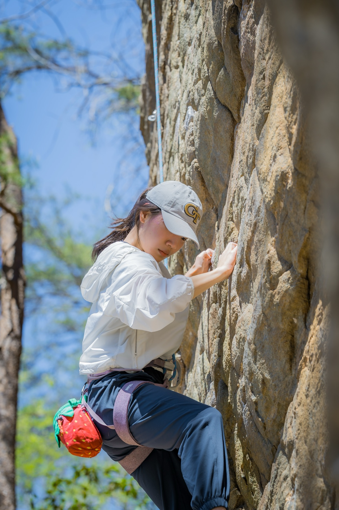
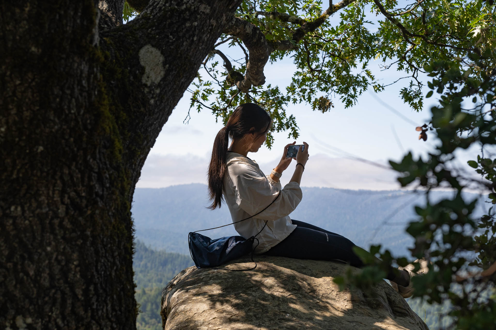
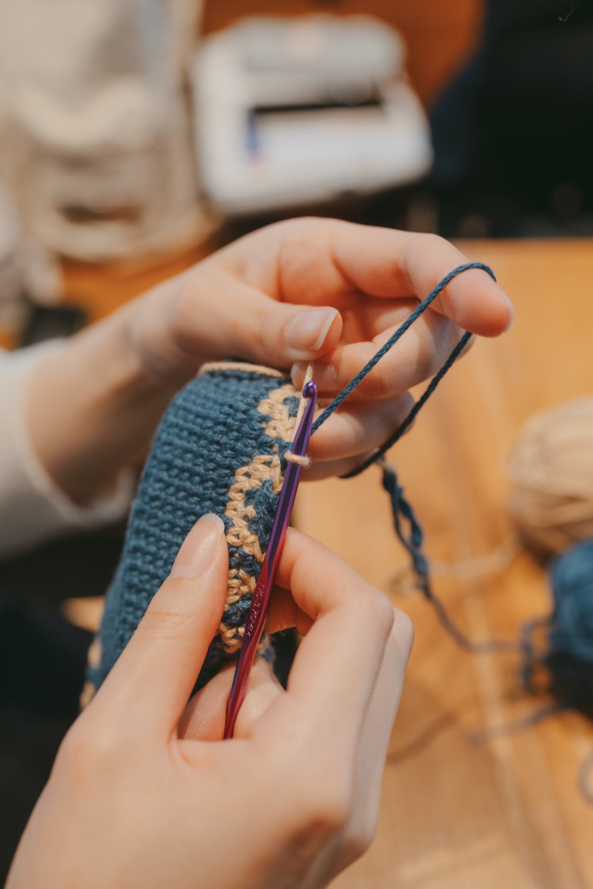

Climbing
I enjoy outdoor climbing, especially rope climbing. I like the texture of real rock and the process of finding my way through a route.
Personal
I enjoy finding little ways to expand my world, through the questions I explore, the places I live, the things I learn, and the experiences I stumble into along the way.
Research is one of the ways I do that. Getting to where I am today has taken a few turns, from naval architecture to AI and robotics, but I’ve always been drawn to questions about how systems behave and interact.
Outside of research, I love spending time outdoors, picking up a sport, and exploring somewhere new. I also enjoy slower days spent on my own, reading or crocheting.

A few places I’ve lived and grown fond of along the way.
Until 2016 My hometown, and the place that will always feel like home.
2017–2023 Where my world grew in more ways than one. A city I’ll always love for its people, energy, and endless possibilities.
Spring 2020 My first home abroad—a short chapter that opened the door to a much bigger world.
2023–present The place I now call home, filled with people I love and memories I hold dear.
Summer 2026 A summer close to the nature I love, and a place that inspired me to grow into a better version of myself.

I enjoy outdoor climbing, especially rope climbing. I like the texture of real rock and the process of finding my way through a route.

I mainly crochet and enjoy simple, repetitive patterns as a way to unwind.
Beyond climbing and crochet, I enjoy hiking, reading and writing, and traveling. I’ve also recently started learning tennis.
A few books that stayed with me for an idea, a feeling, or a different way of seeing the world.
Han Dong-il
Tara Westover
Choi Eunyoung
Erich Fromm
Lulu Miller
Sasha Sagan
Mottos
Dilige et fac quod vis.
Love, and do what you will.
그늘을 드리울 수 있는 사람이 되자.
May I become someone who can offer shade.